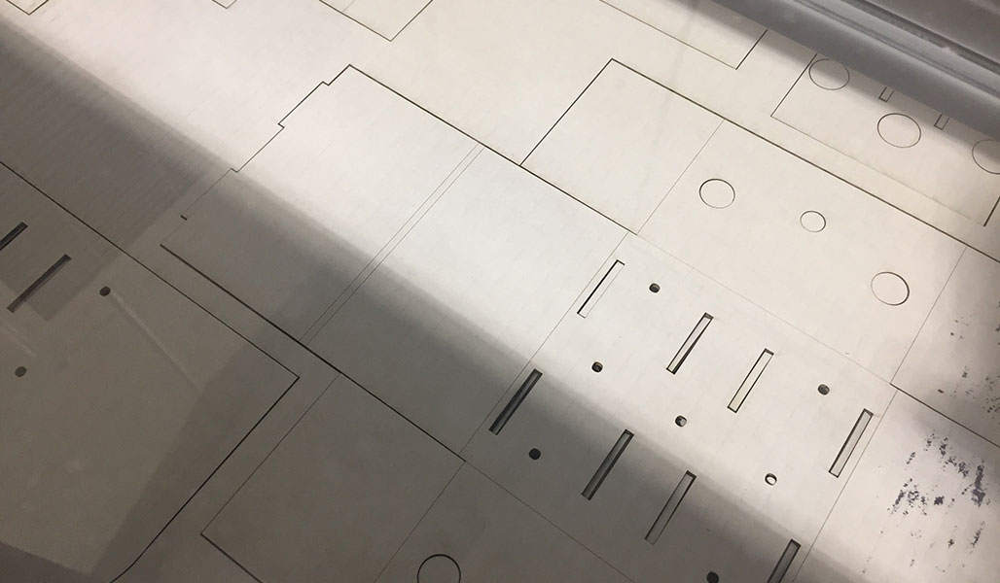

Assignment 9
For Week 9 the Fab Academy asked us to form groups and work on a MTM (machines that make) project with other students in our lab. Since Kayla and I are working in a remote lab attached to Incite Focus out of Detroit we decided that it would be able to tackle this project together. After some brainstorming of what to make we settled on a modular 3 axis pen plotter using the modules first devoloped by Nadyia Peek at MIT. We downloaded the files from Nadyia's repository on Git hub and got to work designing our layout of the machine. The beauty of our design is that it can be re-configured to hold different tools that could do just about anything. Because we had all three axis included we would be able to simply change the programming to the Gestalt Nodes in order to have the machine perform a task in X,Y,Z.
Due to our hectic schedules (we both are still teaching full time) Kayla adopted a divide and conquer mentality for completeion of the project. After we both laser cut the module in cardboard we agreed to use the abundant acrylic scraps we had in our shop to create more durable and visible modules to make our machine. I was in charge of construction of the main machine parts, modeling the main machine mechanism in Inventor and making sure we had all the parts/hardware needed to complete the project. Kayla worked on the files for the acrylic and other Inventor parts from her classroom and the lab when possible. We shared our files via our school network.
Cutting out and building our cardboard test mods:
Cardboard Stage 


Once we were sure we had our design ready to go we started to build the final versions of the modules using acrylic
The build of the machine was actually really quite simple as the modules and Kayla's design tweaks allowed for either a chemical bond using adhesive or a mechanical bond with self tapping hardware or machine screws/washers/nuts.
Laser Cutting Files
3D printed parts
pen holder plus signWe feel pretty good about the design as we can independently control x,y,z axis at this point manually and have the drawing surface, pen plotter and height adjustment all move at once. Next step will be to start learning the control software for the Gestalt nodes and networking.
This is StoneWork, a free, fully standards-compliant CSS template designed by TEMPLATED. The photos in this template are from Fotogrph. This free template is released under the Creative Commons Attribution license, so you're pretty much free to do whatever you want with it (even use it commercially) provided you give us credit for it. Have fun :)